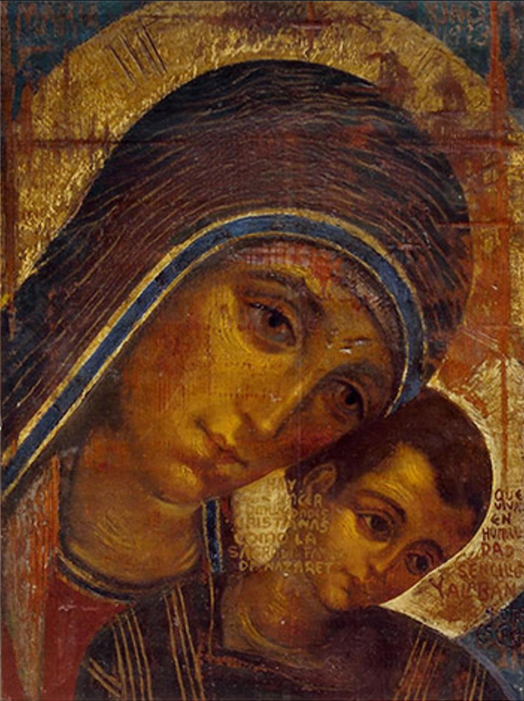
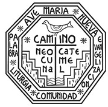

“Venid a mí”
“Venid a mí todos los que estáis fatigados y sobrecargados, y yo os proporcionaré descanso”
(Mt 11, 28)
A partir del próximo día 26 de octubre
Avda. Santa María Micaela, 15 · GUADALAJARA
Una palabra para ti
Pulsa con total libertad la opción que mejor exprese tu situación hoy (nadie registra tu respuesta):
«Él les dijo: “No tengáis miedo. ¿Buscáis a Jesús el Nazareno, el crucificado? Ha resucitado. No está aquí. Mirad el sitio donde lo pusieron.”»
(Mc 16, 6)¿Por qué vivir resignados, como si Dios estuviera muerto, cuando Cristo ha vencido a la muerte? Quienes confiamos en Él somos testigos a diario de su fuerza real en medio de las dificultades.
Te esperamos con las puertas abiertas: puedes agendar un aviso automático en tu propio móvil para que no se te pase.
¿Cómo son estos encuentros? +
«Pero no se lo permitió, sino que le dijo: “Vete a casa con los tuyos y anúnciales lo que el Señor ha hecho contigo y que ha tenido misericordia de ti.”»
(Mc 5, 19)No leas esta Palabra como una exclusión —las puertas de estas catequesis están totalmente abiertas si quieres avivar y profundizar tu fe—, sino como un envío: tú, que ya has experimentado que el Señor ha tenido misericordia de ti, ayúdanos a difundir esta llamada entre los tuyos para que otros puedan descubrir el amor de Dios.
Haz llegar esta llamada a los tuyos: piensa en algún familiar, amigo o compañero que esté pasando un momento difícil o necesite una palabra de descanso.
«(...) había allí un hombre con la mano paralizada. (...) “Levántate y ponte ahí en medio.” (...) Dice al hombre: “Extiende la mano.” La extendió y su mano quedó restablecida.»
(Mc 3, 1. 3. 5)¿Acaso tienes miedo de ponerte en el centro como el hombre de la mano paralizada?
¡DIOS ESTÁ AQUÍ! Como a ellos, Él te espera…No hace falta apuntarse a nada ni asistir siempre. Ven un lunes o un jueves a las 20:00 h, escucha 45 minutos en libertad y comprueba por ti mismo que el brazo de Dios no se ha secado (Ex 6, 6).
«Él, por su parte, solía retirarse a despoblado y se entregaba a la oración.»
(Lc 5, 16)Jesús caminaba en medio de su pueblo sanando a los leprosos de una enfermedad que les consumía la carne y la vida. Hoy hay otros cansancios y desencantos que también nos desgastan por dentro. Si ahora prefieres no acercarte, Él no te fuerza: simplemente te espera en silencio e intercede por cada uno de nosotros, porque lo conoce todo.
Una consideración para alguien a quien estimes:
Respetamos totalmente tu decisión. Quizá hoy no sea para ti, pero ¿conoces a alguien a quien estimes que esté pasando por un momento de cansancio o sobrecarga y a quien esta invitación le pueda hacer bien?